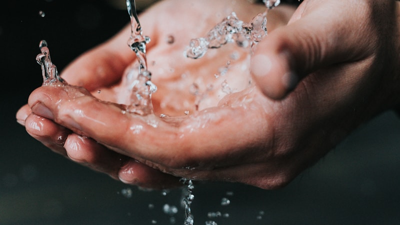

수직 계열화 M&A 확산…AI 붐이 바꾸는 희귀금속 산업 지형

인공지능(AI) 데이터센터 확충과 AI 반도체 수요 급증이 희귀금속 산업의 구조적 변화를 가속화하고 있다. 특히 광산 채굴부터 정련, 소재 가공, 최종 자석 제조까지 전 밸류체인을 한 기업이 통합 관리하는 수직 계열화 인수합병(M&A)이 글로벌 자본 시장의 최우선 과제로 부상했다.
AI 데이터센터 한 곳을 구축하는 데 필요한 핵심광물의 양은 기존 서버팜 대비 수배 이상 많다. 고성능 냉각 시스템, 전력 변환 장치, AI 칩 패키징에 들어가는 희귀금속 수요가 폭발적으로 늘면서, 글로벌 기업들이 안정적 공급원 확보를 위해 M&A에 대규모 자금을 쏟아붓고 있다.
이 대통령의 미·남미 순방 결과, 브라질과는 희토류를 포함한 핵심전략광물 협력을 확대하기로 했고, 아르헨티나와는 핵심광물 공급망 구축을 위한 AI 분야 협력도 논의됐다. 청와대는 이번 순방에서 반도체를 포함한 AI 산업 필수 핵심광물 공급망 구축을 주요 외교 성과로 꼽았다.
수직 계열화의 핵심은 광산 개발권 확보에서 시작된다. 최근 글로벌 자본 시장에서는 아프리카, 남미, 호주 등 주요 생산국의 광산 지분을 확보하려는 경쟁이 치열하다. 일부 글로벌 사모펀드들은 희귀금속 정련 기업과 자석 제조사를 동시에 인수해 통합 밸류체인을 구성하는 전략을 구사하고 있다.
희귀금속 M&A 시장의 거래 규모는 2025년 대비 2026년 상반기 기준 약 40% 이상 증가한 것으로 집계됐다. 특히 네오디뮴·프라세오디뮴 등 영구자석 핵심 소재와 인듐·갈륨 등 반도체 관련 희귀금속 분야에서 거래가 집중되고 있다.
국내에서는 국민성장펀드가 핵심광물 공급망 투자를 본격화하고 있으며, 포스코홀딩스도 2분기 자원·소재 사업의 동반 성장을 이끌며 핵심광물 밸류체인 확장의 수혜를 입었다. 업계 관계자는 '광산부터 자석까지 이어지는 수직 계열화 없이는 AI 시대의 소재 경쟁에서 살아남기 어렵다'고 단언했다.
전문가들은 '희귀금속 M&A의 핵심은 단순한 자원 확보가 아니라, 정련·가공·최종 제품화까지 기술 역량을 내재화하는 것'이라고 강조한다. 단순히 채굴권을 확보하더라도 정련 기술이 없으면 부가가치 창출이 제한적이기 때문이다.
미국의 대중국 핵심광물 규제 강화와 맞물려, 서방 국가들은 공급망 독립을 위한 M&A에 정부 보조금과 정책금융을 투입하는 방식으로 민간 투자를 촉진하고 있다. 미국의 탄탈럼 수입금지 조치는 이 같은 흐름의 일환으로 해석된다.
국내 기업들도 수직 계열화 전략의 필요성을 인식하고 있으나, 글로벌 대형 자본에 비해 M&A 실행력이 아직 제한적이라는 평가가 많다. 국민성장펀드의 핵심광물 투자 확대와 정부 차원의 금융 지원이 이 같은 격차를 좁히는 데 기여할 것으로 기대된다.
희귀금속 수직 계열화 M&A 트렌드는 국내 소재 기업들에게도 파트너십 또는 투자 유치의 기회를 제공하고 있다. 정련·분리·가공 기술을 보유한 국내 중소·중견 기업들이 글로벌 M&A 대상으로 부상할 수 있으며, 이는 밸류에이션 재평가로 이어질 가능성이 높다.
향후 시장 전망과 관련해, AI 데이터센터 투자가 계속되는 한 희귀금속 수요는 구조적 강세를 유지할 것으로 예측된다. 수직 계열화 M&A는 단기 이슈가 아니라 향후 10년을 좌우할 산업 재편의 핵심 동력으로 작동할 전망이다.